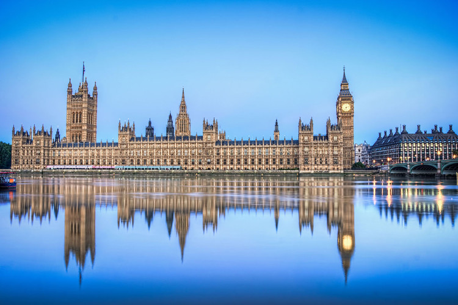

London
The main places you should visit in London, my favourite city.

Here is a picture of me in London last year
Covent Garden
The beautiful
Piccadilly Circus
The extraordinary

Hyde Park
The peaceful

Buckingham Palace
The unique

Palace of Westminster
The royal
London Eye
To see London from above.
Must go to Restaurants
My favorite restaurants in London and the one you must go to when you visit. Chichetti, Brunch at Granger & Co in Notting Hill, Hakkasan and Sushi Samba
The Cicchetti is a delicious Italian, the one in Piccadilly Circus has the best food and beautiful view
To walk through Notting Hill and have brunch at Granger & Co is the perfect program for a Sunday morning

Hakkasan is the best Chinese restaurant with a lively atmosphere, the ideal choice for a cheered up dinner.

Sushi samba is the best sushi at a rooftop with a marvelous view of the city, a great choice for a lunch on a sunny day